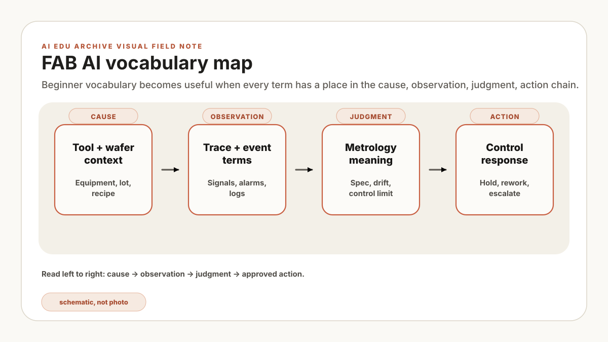
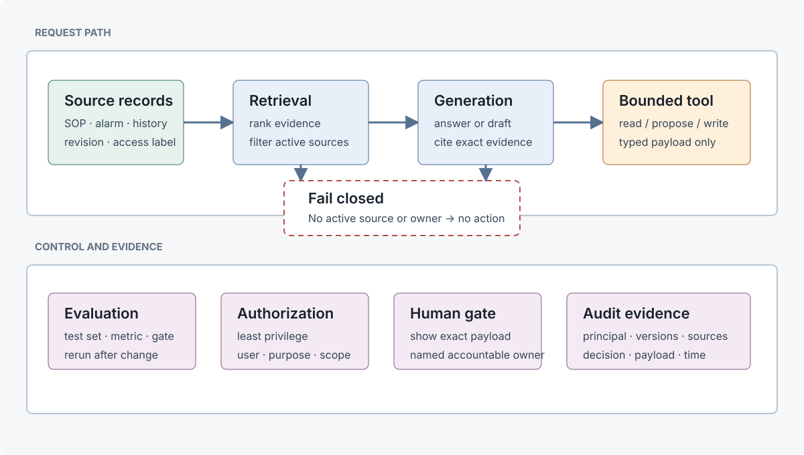

Here is the translation card I wish every project kickoff had: for each AI term, write down the plant artifact it touches, the observable result it should produce, the way it can fail, and the person who owns the next decision. If a term cannot survive that translation, it is still sales language, not an engineering requirement.
A test question returns a polished answer from a superseded work instruction. The cited revision is the useful clue: the team had treated RAG as shorthand for "the model knows our procedures," but retrieval alone does not establish currency. The corrected design filters on approval status and effective date, then withholds the answer when no active source remains. This is a constructed teaching case, not a reported plant event.
The fab examples below are also illustrative. They connect software terms to manufacturing records and decisions; none of these components replaces process controls, access controls, or safety interlocks.

RAG and retrieval
| Term | Definition | Illustrative fab example | Common misconception | Control |
|---|---|---|---|---|
| RAG | A generation workflow that supplies retrieved sources to a model at request time. | A question about an alarm retrieves the current troubleshooting procedure and cites its revision. | Retrieval makes the answer correct. | Require citations, access filtering, source revision checks, and an answer-withheld path. |
| Embedding | A vector representation used to rank text by learned similarity. | A Korean query ranks an English maintenance paragraph near the top. | An embedding is a unique document fingerprint or exact lookup key. | Evaluate recall on site vocabulary and keep keyword search for identifiers. |
| Chunking | Splitting a source into units that can be indexed and retrieved. | A procedure step remains attached to its warning and document metadata. | One fixed character count works for every document. | Test boundary rules and retain source, section, revision, and page metadata. |
| Freshness | The relationship between a retrieved record and the currently effective source. | A superseded troubleshooting copy is excluded from active guidance. | The newest timestamp always identifies the approved revision. | Ingest from the system of record and filter by approval status and effective date. |
Agents and tools
| Term | Definition | Illustrative fab example | Common misconception | Control |
|---|---|---|---|---|
| Agent | A workflow in which a model can select steps or tools and use their results. | An assistant reads alarm history, retrieves a procedure, and drafts a maintenance ticket. | An agent is autonomous judgment or an accountable owner. | Bound the task, limit iterations, validate tool arguments, and assign a human owner. |
| Tool | A typed function or API exposed to the agent. | A read tool queries alarm records; a separate write tool proposes a ticket. | A read endpoint is harmless because it cannot change plant state. | Authorize reads by user and purpose, minimize returned fields, and separate read from write credentials. |
| MCP | A protocol for exposing context and tools through a standard interface. | An on-prem server presents approved document-search and asset-history tools. | The protocol makes the connected tools trustworthy. | Review each server, schema, credential scope, network route, and tool allowlist. |
| Human approval | A named decision required before a defined action continues. | An equipment owner reviews a proposed work order before submission. | A generic confirmation button provides meaningful oversight. | Show the exact payload, evidence, consequence, approver identity, and expiry. |
Evaluation and controls
| Term | Definition | Illustrative fab example | Common misconception | Control |
|---|---|---|---|---|
| Evaluation harness | A repeatable set of inputs, expected evidence, metrics, and pass conditions. | Held-out alarm questions must retrieve the approved source section within top five results. | A few convincing demonstrations establish readiness. | Version the dataset, slice failure modes, and rerun after model, prompt, index, or source changes. |
| Guardrail | A validation or policy check that constrains input, output, or action. | A policy rejects a recipe-write tool call outside an approved parameter range. | One guardrail guarantees safe behavior. | Layer deterministic validation, authorization, approval, monitoring, and a fail-closed path. |
| Audit log | A record of a request, system version, retrieved evidence, tool payload, decision, and principal. | A review links a proposed hold to the approver and the exact payload shown. | An application log is automatically complete or immutable. | Send structured events to access-controlled, retention-managed, tamper-evident storage. |
| Control | A technical or procedural measure that reduces a named risk. | Role-based retrieval prevents a user from receiving a restricted document. | A control proves the system works correctly. | Map each control to a threat, owner, test, evidence record, and residual risk. |
NIST's AI RMF treats risk management as continuing work across Govern, Map, Measure, and Manage. In practical terms, a retrieval score does not prove tool authorization, and a permission check does not prove retrieval quality. A production review needs both kinds of evidence.
Two worked cases with numbers
Case A: the retriever finds a procedure, but not the active one
Suppose a held-out set contains 40 alarm questions, each mapped to an approved expected document. The retriever places that document in its first five results for 34 questions, so Recall@5 = 34 / 40 = 85%. That single number looks serviceable until the six misses are sliced: four of eight safety-related questions failed. The aggregate score concealed the exact subset that should have had the strictest gate.
| Slice | Questions | Top-five hits | Result | Example decision |
|---|---|---|---|---|
| All questions | 40 | 34 | 85% | Below 90% target |
| Safety-related | 8 | 4 | 50% | Stop and diagnose |
| Exact alarm code present | 18 | 17 | 94% | Keep hybrid keyword path |
| Symptom phrasing only | 22 | 17 | 77% | Improve aliases and chunks |
The team first blames model hallucination. Citation inspection shows that generation followed the retrieved text: the index had admitted a superseded revision and ranked it well. The correction is upstream. Filter on approval status and effective date before ranking, preserve revision metadata on every chunk, and withhold the answer when no active source survives. The remaining limitation is blunt but important: if the system of record carries the wrong status, RAG faithfully inherits the wrong status.
Case B: a read-only tool still exposes too much
An alarm-history tool returns 30 days of raw records, including operator identifiers and free-text notes that the answer does not need. Because the endpoint cannot write, the team initially labels it low risk. Least privilege applies to reads too. A tighter schema accepts one authorized asset and a maximum 24-hour window, then returns seven approved fields. Twenty negative tests request unauthorized assets; every test must return zero records and a structured denial code.
Pass: twenty authorized tests return only the seven named fields, and twenty unauthorized tests return no plant data. Stop: one foreign asset record or unnecessary identity field suspends the pilot. Limit: this verifies access scope, not answer accuracy, prompt-injection resistance, or correctness of the underlying database permissions.
A seven-column release term card
Take one use case and fill the card before comparing models or hardware. Empty cells are more informative than polished architecture slides because they reveal which operating decisions have not been made.
| Cell | Concrete entry | Failure when omitted |
|---|---|---|
| Source | Alarm DB, approved SOP, work history | No defensible evidence boundary |
| Retrieval | Asset filter plus keyword/vector hybrid | Wrong asset or revision enters context |
| Output | Draft with cited paragraph and revision | Plausible but unverifiable prose |
| Action | Save to temporary queue only | Read and state change blur together |
| Owner | Maintenance owner | No one can reject or stop |
| Gate | Overall Recall@5 at least 90%; safety slice 100% | Demo reactions replace evaluation |
| Stop | No active source, authorization failure, no owner | The system acts when it should abstain |
When three or more cells still say “TBD,” I would shrink the pilot to read-only retrieval. That is not timidity. It is a way to learn about document quality and query language without quietly turning unresolved ownership into software authority.
Primary sources behind the controls
These documents do not define a site procedure. They support the evaluation, least-privilege, consent, and evidence principles used in this glossary.
- NIST AI RMF Core covers documented test sets and metrics, deployment-relevant evaluation, monitoring, and safe failure.
- NIST SP 800-53 Rev. 5.1 is the basis for the least-privilege and audit-record framing.
- Model Context Protocol specification states that tools require caution, consent, authorization, access control, and data protection; a protocol connection is not a trust decision.
With the vocabulary pinned to artifacts, the natural next read is FAB equipment data 101, where the same discipline becomes a source manifest and a reproducible join.